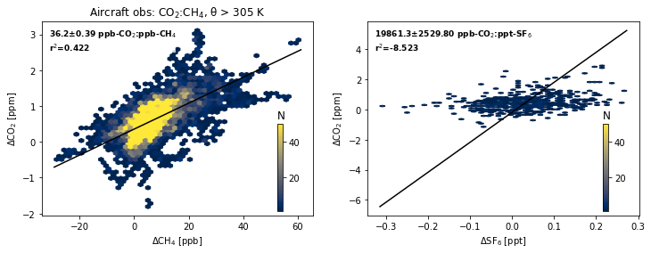
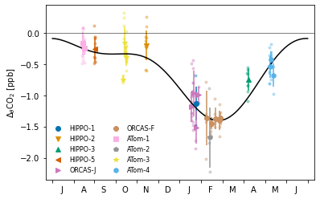
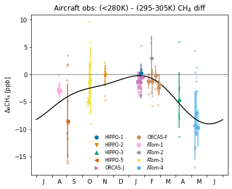
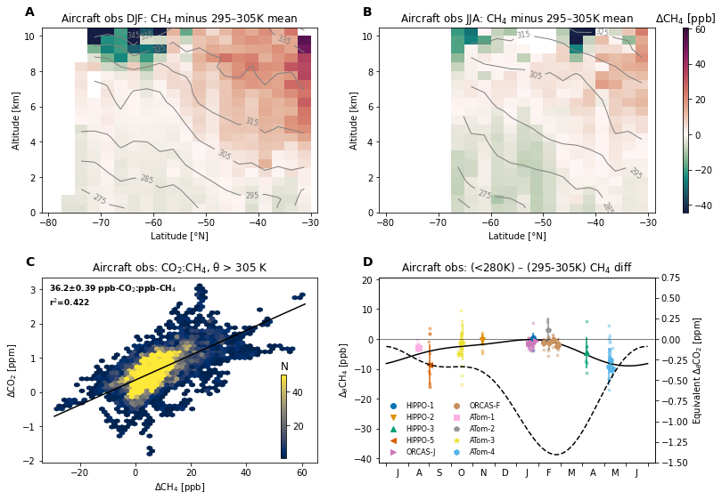

Observed concentrations and gradients of methane¶
%load_ext autoreload
%autoreload 2
import numpy as np
import xarray as xr
import matplotlib.pyplot as plt
import matplotlib.colors as colors
import matplotlib.gridspec as gridspec
import datasets
import emergent_constraint as ec
import figure_panels
import obs_aircraft
import regression_models
import util
Load aircraft data¶
lat_lo_aircraft = -90.
lat_hi_aircraft = -15.
profiles_only = True
bin_aggregation_method = 'median'
parameters = ec.get_parameters()
campaign_info = obs_aircraft.get_campaign_info(verbose=False)
def load_data_aircraft(m):
df = obs_aircraft.open_aircraft_data(m)
sel_loc = obs_aircraft.groups_select_profiles(df, lat_lo_aircraft, lat_hi_aircraft,
profiles_only=profiles_only)
return df.loc[sel_loc]
dfs_obs = {m: load_data_aircraft(m) for m in ['pfp', 'medusa', 'obs',]}
loading pfp
loading medusa
loading obs
Upper troposphere CO2 vs. CH4¶
from mpl_toolkits.axes_grid1.inset_locator import inset_axes
def gas_scatter_upper_trop(theta_crit, ax, df_obs, constituent):
txt_box_props = dict(facecolor='w', alpha=0.75, edgecolor='None', boxstyle='square,pad=0')
CO2, Y = obs_aircraft.get_property_property(
df=df_obs,
campaign_sel_list=campaign_info.keys(),
xname='co2',
yname=constituent,
theta_bin=(theta_crit, np.Inf),
lat_range=(-90., -45.),
filter_strat=True,
)
sc = ax.hexbin(Y, CO2, mincnt=1, vmax=50, gridsize=50, cmap='cividis',
) #, C=df_sub.theta)
cax = inset_axes(ax, width="2%", height="45%", loc='lower left',
bbox_to_anchor=(0.85, 0., 1, 1),
bbox_transform=ax.transAxes,
)
cb = plt.colorbar(sc, ax=ax, cax=cax)
#cb.set_ticks(np.arange(310, 370, 10))
cb.ax.set_title('N', loc='left')
fit = regression_models.linreg_odr(Y, CO2) #linreg_odr
x = np.array((min(Y), max(Y)))
ax.plot(x, fit.predict(x), 'k-')
ax.set_ylabel('$\Delta$CO$_2$ [ppm]')
if constituent == 'ch4':
ax.set_xlabel('$\Delta$CH$_4$ [ppb]')
ax.set_title(f'Aircraft obs: CO$_2$:CH$_4$, θ > {theta_crit:0.0f} K')
#cb.ax.set_title('θ [K]', loc='left')
units = 'ppb'
c_str = 'CH$_4$'
if constituent == 'sf6':
ax.set_xlabel('$\Delta$SF$_6$ [ppt]')
units = 'ppt'
c_str = 'SF$_6$'
str_text = (
f'{1e3 * fit.beta[0]:0.1f}±{1e3 * fit.stderr_beta[0]:0.2f} ppb-CO$_2$:{units}-{c_str}\n' +
f'r$^2$={fit.r2:0.3f}'
)
xoff = np.diff(ax.get_xlim()) * 0.025
yoff = -np.diff(ax.get_ylim()) * 0.15
ax.text(
ax.get_xlim()[0]+xoff, ax.get_ylim()[1]+yoff,
str_text,
fontsize=9, fontweight='bold',
bbox=txt_box_props,
)
return fit.beta[0]
slope = {}
fig, axs = util.canvas(1, 2)
for p, constituent in enumerate(['ch4', 'sf6']):
i, j = np.unravel_index(p, axs.shape)
ax = axs[i, j]
slope[constituent] = gas_scatter_upper_trop(
305., ax, dfs_obs['obs'], constituent=constituent,
)

Vertical gradients¶
theta_bins = obs_aircraft.make_theta_bins(
**{k: parameters[k] for k in ['lbin', 'ubin', 'udθ', 'lbin_as_upper_bound',]}
)
dfs_campaign_gradients = {}; dfs_flight_gradients = {}
for c in ['co2', 'ch4']:
dfs_campaign_gradients[c] = obs_aircraft.campaign_gradients(
dfs_obs, campaign_info.keys(), theta_bins,
gradient_lat_range=parameters['gradient_lat_range'],
constituent=c,
)
dfs_flight_gradients[c] = obs_aircraft.flight_gradients(
dfs_obs, theta_bins,
gradient_lat_range=parameters['gradient_lat_range'],
constituent=c,
)
dfs_campaign_gradients['ch4']
| ch4pfp | ch4mpfp | ch4 | ch4qcls | ch4mqcls | gradient_mean | gradient_std | |
|---|---|---|---|---|---|---|---|
| campaign | |||||||
| HIPPO-1 | 1.290 | -1.5600 | -1.850 | NaN | NaN | -0.280000 | 0.780000 |
| HIPPO-2 | -0.005 | -0.0960 | -0.705 | NaN | NaN | -0.355000 | 0.048000 |
| HIPPO-3 | -6.520 | -0.6990 | -10.410 | NaN | NaN | -8.465000 | 0.349500 |
| HIPPO-5 | -3.690 | -2.3115 | -9.705 | NaN | NaN | -6.697500 | 1.155750 |
| ORCAS-J | NaN | NaN | -1.415 | 2.6050 | -2.840 | 0.595000 | 1.420000 |
| ORCAS-F | NaN | NaN | -1.360 | 0.4150 | -1.790 | -0.472500 | 0.895000 |
| ATom-1 | NaN | NaN | -2.938 | NaN | NaN | -2.938000 | NaN |
| ATom-2 | -1.640 | -0.1570 | -1.939 | 2.4945 | -4.082 | 0.005500 | 1.888356 |
| ATom-3 | -3.855 | -0.6435 | -3.848 | 1.0820 | -4.991 | -1.249500 | 2.216728 |
| ATom-4 | -10.560 | -0.4300 | -9.240 | -7.3980 | -3.137 | -8.763625 | 1.388585 |
fig, axs = util.canvas(1, 1)
xco2, yco2 = figure_panels.obs_theta_gradient(dfs_flight_gradients['co2'], axs[0, 0])
ylm = axs[0, 0].get_ylim()

fig, axs = util.canvas(1, 1, figsize=(6, 5), use_gridspec=True, hspace=0.3)
axs = axs.ravel()
figure_panels.obs_theta_gradient(
dfs_flight_gradients['ch4'], axs[0], constituent='ch4', theta_bins=theta_bins
);

Load section¶
ds = datasets.aircraft_sections('obs').groupby('time.season').mean().compute()
ds
<xarray.Dataset>
Dimensions: (z: 22, y: 20, season: 4, ye: 20, ze: 23)
Coordinates:
ALT (z, y) float64 0.25 0.25 0.25 ... 10.75 10.75 10.75
LAT (z, y) float64 -78.75 -76.25 -73.75 ... -33.75 -31.25
* y (y) float64 -78.75 -76.25 -73.75 ... -33.75 -31.25
* ye (ye) float64 -80.0 -77.5 -75.0 ... -37.5 -35.0 -32.5
* z (z) float64 0.25 0.75 1.25 1.75 ... 9.75 10.25 10.75
* ze (ze) float64 0.0 0.5 1.0 1.5 2.0 ... 9.5 10.0 10.5 11.0
* season (season) object 'DJF' 'JJA' 'MAM' 'SON'
Data variables: (12/16)
CH4_binned (season, z, y) float64 nan 1.774e+03 ... 1.799e+03
CO2_binned (season, z, y) float64 nan 398.0 398.0 ... 396.1 396.1
DCH4_binned (season, z, y) float64 nan -3.556 ... 8.062 8.078
DCO2_binned (season, z, y) float64 nan -1.475 -1.52 ... 1.441 1.489
DSF6_binned (season, z, y) float64 nan nan nan ... 0.08326 0.06396
N_CH4 (season, z, y) float64 nan 7.0 55.0 ... 5.0 6.0 7.5
... ...
N_SF6 (season, z, y) float64 nan nan nan nan ... nan 2.0 1.0
N_STRATOSPHERE (season, z, y) float64 nan 7.0 55.0 ... 5.0 6.0 7.5
SF6_binned (season, z, y) float64 nan nan nan ... nan 9.26 7.975
STRATOSPHERE_binned (season, z, y) float64 nan 0.0 0.0 0.0 ... 0.0 0.0 0.0
THETA (season, z, y) float64 nan nan 264.8 ... 331.1 331.9
THETA_binned (season, z, y) float64 nan 265.3 264.0 ... 330.8 331.4xarray.Dataset
- z: 22
- y: 20
- season: 4
- ye: 20
- ze: 23
- ALT(z, y)float640.25 0.25 0.25 ... 10.75 10.75
array([[ 0.25, 0.25, 0.25, 0.25, 0.25, 0.25, 0.25, 0.25, 0.25, 0.25, 0.25, 0.25, 0.25, 0.25, 0.25, 0.25, 0.25, 0.25, 0.25, 0.25], [ 0.75, 0.75, 0.75, 0.75, 0.75, 0.75, 0.75, 0.75, 0.75, 0.75, 0.75, 0.75, 0.75, 0.75, 0.75, 0.75, 0.75, 0.75, 0.75, 0.75], [ 1.25, 1.25, 1.25, 1.25, 1.25, 1.25, 1.25, 1.25, 1.25, 1.25, 1.25, 1.25, 1.25, 1.25, 1.25, 1.25, 1.25, 1.25, 1.25, 1.25], [ 1.75, 1.75, 1.75, 1.75, 1.75, 1.75, 1.75, 1.75, 1.75, 1.75, 1.75, 1.75, 1.75, 1.75, 1.75, 1.75, 1.75, 1.75, 1.75, 1.75], [ 2.25, 2.25, 2.25, 2.25, 2.25, 2.25, 2.25, 2.25, 2.25, 2.25, 2.25, 2.25, 2.25, 2.25, 2.25, 2.25, 2.25, 2.25, 2.25, 2.25], [ 2.75, 2.75, 2.75, 2.75, 2.75, 2.75, 2.75, 2.75, 2.75, 2.75, 2.75, 2.75, 2.75, 2.75, 2.75, 2.75, 2.75, 2.75, 2.75, 2.75], [ 3.25, 3.25, 3.25, 3.25, 3.25, 3.25, 3.25, 3.25, 3.25, 3.25, 3.25, 3.25, 3.25, 3.25, 3.25, 3.25, 3.25, 3.25, ... 7.75, 7.75, 7.75, 7.75, 7.75, 7.75, 7.75, 7.75, 7.75, 7.75, 7.75], [ 8.25, 8.25, 8.25, 8.25, 8.25, 8.25, 8.25, 8.25, 8.25, 8.25, 8.25, 8.25, 8.25, 8.25, 8.25, 8.25, 8.25, 8.25, 8.25, 8.25], [ 8.75, 8.75, 8.75, 8.75, 8.75, 8.75, 8.75, 8.75, 8.75, 8.75, 8.75, 8.75, 8.75, 8.75, 8.75, 8.75, 8.75, 8.75, 8.75, 8.75], [ 9.25, 9.25, 9.25, 9.25, 9.25, 9.25, 9.25, 9.25, 9.25, 9.25, 9.25, 9.25, 9.25, 9.25, 9.25, 9.25, 9.25, 9.25, 9.25, 9.25], [ 9.75, 9.75, 9.75, 9.75, 9.75, 9.75, 9.75, 9.75, 9.75, 9.75, 9.75, 9.75, 9.75, 9.75, 9.75, 9.75, 9.75, 9.75, 9.75, 9.75], [10.25, 10.25, 10.25, 10.25, 10.25, 10.25, 10.25, 10.25, 10.25, 10.25, 10.25, 10.25, 10.25, 10.25, 10.25, 10.25, 10.25, 10.25, 10.25, 10.25], [10.75, 10.75, 10.75, 10.75, 10.75, 10.75, 10.75, 10.75, 10.75, 10.75, 10.75, 10.75, 10.75, 10.75, 10.75, 10.75, 10.75, 10.75, 10.75, 10.75]]) - LAT(z, y)float64-78.75 -76.25 ... -33.75 -31.25
array([[-78.75, -76.25, -73.75, -71.25, -68.75, -66.25, -63.75, -61.25, -58.75, -56.25, -53.75, -51.25, -48.75, -46.25, -43.75, -41.25, -38.75, -36.25, -33.75, -31.25], [-78.75, -76.25, -73.75, -71.25, -68.75, -66.25, -63.75, -61.25, -58.75, -56.25, -53.75, -51.25, -48.75, -46.25, -43.75, -41.25, -38.75, -36.25, -33.75, -31.25], [-78.75, -76.25, -73.75, -71.25, -68.75, -66.25, -63.75, -61.25, -58.75, -56.25, -53.75, -51.25, -48.75, -46.25, -43.75, -41.25, -38.75, -36.25, -33.75, -31.25], [-78.75, -76.25, -73.75, -71.25, -68.75, -66.25, -63.75, -61.25, -58.75, -56.25, -53.75, -51.25, -48.75, -46.25, -43.75, -41.25, -38.75, -36.25, -33.75, -31.25], [-78.75, -76.25, -73.75, -71.25, -68.75, -66.25, -63.75, -61.25, -58.75, -56.25, -53.75, -51.25, -48.75, -46.25, -43.75, -41.25, -38.75, -36.25, -33.75, -31.25], [-78.75, -76.25, -73.75, -71.25, -68.75, -66.25, -63.75, -61.25, -58.75, -56.25, -53.75, -51.25, -48.75, -46.25, -43.75, -41.25, -38.75, -36.25, -33.75, -31.25], [-78.75, -76.25, -73.75, -71.25, -68.75, -66.25, -63.75, -61.25, -58.75, -56.25, -53.75, -51.25, -48.75, -46.25, -43.75, -41.25, ... -58.75, -56.25, -53.75, -51.25, -48.75, -46.25, -43.75, -41.25, -38.75, -36.25, -33.75, -31.25], [-78.75, -76.25, -73.75, -71.25, -68.75, -66.25, -63.75, -61.25, -58.75, -56.25, -53.75, -51.25, -48.75, -46.25, -43.75, -41.25, -38.75, -36.25, -33.75, -31.25], [-78.75, -76.25, -73.75, -71.25, -68.75, -66.25, -63.75, -61.25, -58.75, -56.25, -53.75, -51.25, -48.75, -46.25, -43.75, -41.25, -38.75, -36.25, -33.75, -31.25], [-78.75, -76.25, -73.75, -71.25, -68.75, -66.25, -63.75, -61.25, -58.75, -56.25, -53.75, -51.25, -48.75, -46.25, -43.75, -41.25, -38.75, -36.25, -33.75, -31.25], [-78.75, -76.25, -73.75, -71.25, -68.75, -66.25, -63.75, -61.25, -58.75, -56.25, -53.75, -51.25, -48.75, -46.25, -43.75, -41.25, -38.75, -36.25, -33.75, -31.25], [-78.75, -76.25, -73.75, -71.25, -68.75, -66.25, -63.75, -61.25, -58.75, -56.25, -53.75, -51.25, -48.75, -46.25, -43.75, -41.25, -38.75, -36.25, -33.75, -31.25], [-78.75, -76.25, -73.75, -71.25, -68.75, -66.25, -63.75, -61.25, -58.75, -56.25, -53.75, -51.25, -48.75, -46.25, -43.75, -41.25, -38.75, -36.25, -33.75, -31.25]]) - y(y)float64-78.75 -76.25 ... -33.75 -31.25
array([-78.75, -76.25, -73.75, -71.25, -68.75, -66.25, -63.75, -61.25, -58.75, -56.25, -53.75, -51.25, -48.75, -46.25, -43.75, -41.25, -38.75, -36.25, -33.75, -31.25]) - ye(ye)float64-80.0 -77.5 -75.0 ... -35.0 -32.5
array([-80. , -77.5, -75. , -72.5, -70. , -67.5, -65. , -62.5, -60. , -57.5, -55. , -52.5, -50. , -47.5, -45. , -42.5, -40. , -37.5, -35. , -32.5]) - z(z)float640.25 0.75 1.25 ... 9.75 10.25 10.75
array([ 0.25, 0.75, 1.25, 1.75, 2.25, 2.75, 3.25, 3.75, 4.25, 4.75, 5.25, 5.75, 6.25, 6.75, 7.25, 7.75, 8.25, 8.75, 9.25, 9.75, 10.25, 10.75]) - ze(ze)float640.0 0.5 1.0 1.5 ... 10.0 10.5 11.0
array([ 0. , 0.5, 1. , 1.5, 2. , 2.5, 3. , 3.5, 4. , 4.5, 5. , 5.5, 6. , 6.5, 7. , 7.5, 8. , 8.5, 9. , 9.5, 10. , 10.5, 11. ]) - season(season)object'DJF' 'JJA' 'MAM' 'SON'
array(['DJF', 'JJA', 'MAM', 'SON'], dtype=object)
- CH4_binned(season, z, y)float64nan 1.774e+03 ... 1.799e+03
array([[[ nan, 1774.07285714, 1773.89418182, ..., 1752.31055556, 1732.58305556, 1755.72711992], [ nan, 1774.47 , 1774.62285714, ..., 1752.58179094, 1731.79045455, 1756.37459091], [ nan, nan, 1774.9295 , ..., 1753.249 , 1732.76428571, 1757.15664469], ..., [ nan, nan, nan, ..., 1775.86514444, 1793.599 , 1832.75433333], [ nan, nan, nan, ..., 1777.73412302, 1802.54066667, nan], [ nan, nan, nan, ..., 1789.85551301, 1797.36394898, nan]], [[ nan, nan, nan, ..., 1792.92846366, 1791.75329278, 1792.07608333], [ nan, nan, nan, ..., 1793.42741667, 1791.63595 , 1792.41563095], [ nan, nan, nan, ..., 1792.38199074, 1791.95965263, 1792.54994286], ... [1774.67145763, 1759.32671429, nan, ..., 1795.741 , 1819.29811111, 1839.78843478], [ nan, 1758.41175 , nan, ..., 1797.31250649, 1832.3206 , 1837.29983582], [ nan, 1751.75471053, 1772.90528947, ..., 1799.75360843, 1842.12974419, 1845.88566667]], [[ nan, 1814.07763636, nan, ..., 1786.31328289, 1768.52517857, 1760.27823529], [ nan, 1815.30611364, nan, ..., 1786.18868571, 1774.1603125 , 1759.43857143], [ nan, 1815.25855263, nan, ..., 1786.73315455, 1761.307 , 1757.50666667], ..., [1813.97595745, nan, 1816.99065169, ..., 1823.01660784, 1799.46557202, 1827.7256 ], [1805.43189744, nan, 1805.495 , ..., 1827.2086 , 1798.08422269, nan], [ nan, nan, nan, ..., 1825.766 , 1798.57695455, 1798.59340179]]]) - CO2_binned(season, z, y)float64nan 398.0 398.0 ... 396.1 396.1
array([[[ nan, 398.00542857, 397.96038182, ..., 391.28932339, 383.0525 , 392.66043659], [ nan, 398.027 , 398.0482381 , ..., 391.44629123, 383.13428571, 392.61444924], [ nan, nan, 398.26885 , ..., 391.617375 , 383.34861667, 392.59818571], ..., [ nan, nan, nan, ..., 395.3839419 , 400.97787847, 399.41935556], [ nan, nan, nan, ..., 395.49958373, 401.38783333, nan], [ nan, nan, nan, ..., 395.63913082, 400.99512985, nan]], [[ nan, nan, nan, ..., 394.96169892, 395.08429155, 394.95282832], [ nan, nan, nan, ..., 394.90471979, 395.15398885, 395.04995057], [ nan, nan, nan, ..., 395.07181954, 395.242684 , 395.19415741], ... [404.39766949, 404.07914286, nan, ..., 395.70341667, 405.56088889, 406.48428261], [ nan, 404.13204688, nan, ..., 396.01091883, 406.12165 , 406.34383582], [ nan, 404.02113158, 404.49605702, ..., 396.08195482, 405.78481047, 405.20548148]], [[ nan, 403.58088636, nan, ..., 394.3223136 , 385.47678571, 384.93490455], [ nan, 403.54296591, nan, ..., 394.32781071, 385.8415625 , 385.00444615], [ nan, 403.53514103, nan, ..., 394.18657857, 385.63387885, 385.33453077], ..., [404.04243085, nan, 404.40884831, ..., 404.76618627, 396.28691524, 405.45883 ], [404.03413248, nan, 404.11 , ..., 404.6432 , 396.06867647, nan], [ nan, nan, nan, ..., 404.7732 , 396.07168182, 396.11960268]]]) - DCH4_binned(season, z, y)float64nan -3.556 -3.735 ... 8.062 8.078
array([[[ nan, -3.55638408, -3.7350594 , ..., -4.49794565, -3.40470564, -1.78367256], [ nan, -3.15924122, -3.00638408, ..., -4.22671027, -4.19730665, -1.13620157], [ nan, nan, -2.69974122, ..., -3.55950121, -3.22347548, -0.35414779], ..., [ nan, nan, nan, ..., 11.64820239, 15.26746751, 53.72050958], [ nan, nan, nan, ..., 13.51718096, 24.20913418, nan], [ nan, nan, nan, ..., 25.63857095, 19.03241649, nan]], [[ nan, nan, nan, ..., -1.41230834, -2.58747922, -2.26468867], [ nan, nan, nan, ..., -0.91335533, -2.704822 , -1.92514105], [ nan, nan, nan, ..., -1.95878126, -2.38111937, -1.79082914], ... [-35.3754858 , -50.72022914, nan, ..., 17.75140889, 9.25116769, 29.74149136], [ nan, -51.63519342, nan, ..., 19.32291538, 22.27365658, 27.2528924 ], [ nan, -58.2922329 , -37.14165395, ..., 21.76401732, 32.08280076, 35.83872324]], [[ nan, -4.7864592 , nan, ..., -4.20185277, 6.3590028 , -1.88794048], [ nan, -3.55798192, nan, ..., -4.32644995, 11.99413673, -2.72760434], [ nan, -3.60554293, nan, ..., -3.78198112, -0.85917577, -4.65950911], ..., [ -4.88813811, nan, -1.87344388, ..., 4.15251228, 8.95043636, 8.86150444], [-13.43219812, nan, -13.36909556, ..., 8.34450444, 7.56908702, nan], [ nan, nan, nan, ..., 6.90190444, 8.06181888, 8.07826612]]]) - DCO2_binned(season, z, y)float64nan -1.475 -1.52 ... 1.441 1.489
array([[[ nan, -1.47532274, -1.52036949, ..., -0.50009897, -1.0455934 , -0.21993176], [ nan, -1.45375131, -1.43251322, ..., -0.34313113, -0.96380769, -0.26591911], [ nan, nan, -1.21190131, ..., -0.17204736, -0.74947674, -0.28218264], ..., [ nan, nan, nan, ..., 0.3034459 , 0.40618117, -2.24328774], [ nan, nan, nan, ..., 0.41908773, 0.81613603, nan], [ nan, nan, nan, ..., 0.55863482, 0.42343254, nan]], [[ nan, nan, nan, ..., -0.34410752, -0.22151488, -0.35297811], [ nan, nan, nan, ..., -0.40108664, -0.15181759, -0.25585586], [ nan, nan, nan, ..., -0.23398689, -0.06312243, -0.11164903], ... [-0.33222066, -0.6507473 , nan, ..., 0.11596934, 0.83099873, 1.75439245], [ nan, -0.59784328, nan, ..., 0.42347151, 1.39175985, 1.61394567], [ nan, -0.70875858, -0.23383314, ..., 0.4945075 , 1.05492031, 0.47559133]], [[ nan, -0.25028657, nan, ..., -0.308539 , 0.04625346, -0.49562771], [ nan, -0.28820702, nan, ..., -0.30304188, 0.41103024, -0.4260861 ], [ nan, -0.29603191, nan, ..., -0.44427402, 0.20334659, -0.09600149], ..., [ 0.21125792, nan, 0.57767538, ..., 0.93501334, 1.65606264, 1.62765707], [ 0.20295955, nan, 0.27882707, ..., 0.81202707, 1.43782388, nan], [ nan, nan, nan, ..., 0.94202707, 1.44082922, 1.48875008]]]) - DSF6_binned(season, z, y)float64nan nan nan ... nan 0.08326 0.06396
array([[[ nan, nan, nan, ..., -5.46875000e-03, nan, 4.57698985e-02], [ nan, nan, nan, ..., 9.45312500e-02, 3.45312500e-02, 5.58974359e-02], [ nan, nan, nan, ..., 2.95312500e-02, nan, 6.58974359e-02], ..., [ nan, nan, nan, ..., 2.68810096e-02, 5.92307692e-02, 9.92307692e-02], [ nan, nan, nan, ..., 5.18810096e-02, 9.42307692e-02, nan], [ nan, nan, nan, ..., 1.03481010e-01, 2.06923077e-01, nan]], [[ nan, nan, nan, ..., 1.05298784e-02, 1.60298784e-02, 2.18632117e-02], [ nan, nan, nan, ..., -4.14701216e-02, -3.97012163e-03, 2.70491803e-03], [ nan, nan, nan, ..., 4.35298784e-02, 2.77049180e-02, 8.60298784e-02], ... [-2.39201970e-01, -2.96344828e-01, nan, ..., nan, 6.36551724e-02, 1.33655172e-01], [ nan, -2.26344828e-01, nan, ..., 3.36551724e-02, nan, 8.86551724e-02], [ nan, -2.78011494e-01, -1.84037135e-01, ..., 1.11432950e-01, 6.28218391e-02, 1.00321839e-01]], [[ nan, -4.87375887e-02, nan, ..., -8.22912081e-02, 2.26551724e-02, 4.46551724e-02], [ nan, -3.67375887e-02, nan, ..., -9.85412081e-02, 5.79885057e-02, 1.09655172e-01], [ nan, -3.67375887e-02, nan, ..., -1.18541208e-01, -1.03448276e-02, 5.46551724e-02], ..., [-1.76466796e-02, nan, -7.09219858e-05, ..., 9.32624113e-02, 8.95143474e-02, 5.49290780e-02], [-6.59042553e-02, nan, -3.67375887e-02, ..., 6.32624113e-02, 7.32624113e-02, nan], [ nan, nan, nan, ..., nan, 8.32624113e-02, 6.39587919e-02]]]) - N_CH4(season, z, y)float64nan 7.0 55.0 176.0 ... 5.0 6.0 7.5
array([[[ nan, 7. , 55. , ..., 45. , 18. , 56. ], [ nan, 1. , 21. , ..., 18.5 , 11. , 19.5 ], [ nan, nan, 20. , ..., 20. , 7. , 17. ], ..., [ nan, nan, nan, ..., 5.66666667, 15. , 9. ], [ nan, nan, nan, ..., 8.33333333, 5.5 , nan], [ nan, nan, nan, ..., 81. , 53. , nan]], [[ nan, nan, nan, ..., 29.5 , 19.5 , 24. ], [ nan, nan, nan, ..., 16. , 12.5 , 9.5 ], [ nan, nan, nan, ..., 19.5 , 12. , 9.5 ], ... [ 59. , 14. , nan, ..., 6. , 9. , 23. ], [ nan, 32. , nan, ..., 9. , 10. , 67. ], [ nan, 38. , 114. , ..., 44.5 , 86. , 27. ]], [[ nan, 44. , nan, ..., 25. , 28. , 17. ], [ nan, 44. , nan, ..., 12. , 32. , 7. ], [ nan, 38. , nan, ..., 10.5 , 35. , 6. ], ..., [ 94. , nan, 89. , ..., 51. , 63.5 , 50. ], [117. , nan, 2. , ..., 5. , 12. , nan], [ nan, nan, nan, ..., 5. , 6. , 7.5 ]]]) - N_CO2(season, z, y)float64nan 7.0 55.0 176.0 ... 5.0 6.0 7.5
array([[[ nan, 7. , 55. , ..., 43. , 2. , 49. ], [ nan, 1. , 21. , ..., 15.5 , 7. , 14. ], [ nan, nan, 20. , ..., 17. , 6. , 13.5 ], ..., [ nan, nan, nan, ..., 6. , 15. , 9. ], [ nan, nan, nan, ..., 8.33333333, 5.5 , nan], [ nan, nan, nan, ..., 81. , 53. , nan]], [[ nan, nan, nan, ..., 50. , 32. , 30.5 ], [ nan, nan, nan, ..., 22. , 15.5 , 16. ], [ nan, nan, nan, ..., 20.5 , 15. , 16. ], ... [ 59. , 14. , nan, ..., 6. , 9. , 23. ], [ nan, 32. , nan, ..., 9. , 10. , 67. ], [ nan, 38. , 114. , ..., 44.5 , 86. , 27. ]], [[ nan, 44. , nan, ..., 25. , 28. , 22. ], [ nan, 44. , nan, ..., 12. , 32. , 13. ], [ nan, 39. , nan, ..., 12. , 52. , 13. ], ..., [ 94. , nan, 89. , ..., 51. , 63.5 , 50. ], [117. , nan, 2. , ..., 5. , 12. , nan], [ nan, nan, nan, ..., 5. , 6. , 7.5 ]]]) - N_DCH4(season, z, y)float64nan 7.0 55.0 176.0 ... 5.0 6.0 7.5
array([[[ nan, 7. , 55. , ..., 45. , 18. , 56. ], [ nan, 1. , 21. , ..., 18.5 , 11. , 19.5 ], [ nan, nan, 20. , ..., 20. , 7. , 17. ], ..., [ nan, nan, nan, ..., 5.66666667, 15. , 9. ], [ nan, nan, nan, ..., 8.33333333, 5.5 , nan], [ nan, nan, nan, ..., 81. , 53. , nan]], [[ nan, nan, nan, ..., 29.5 , 19.5 , 24. ], [ nan, nan, nan, ..., 16. , 12.5 , 9.5 ], [ nan, nan, nan, ..., 19.5 , 12. , 9.5 ], ... [ 59. , 14. , nan, ..., 6. , 9. , 23. ], [ nan, 32. , nan, ..., 9. , 10. , 67. ], [ nan, 38. , 114. , ..., 44.5 , 86. , 27. ]], [[ nan, 44. , nan, ..., 25. , 28. , 17. ], [ nan, 44. , nan, ..., 12. , 32. , 7. ], [ nan, 38. , nan, ..., 10.5 , 35. , 6. ], ..., [ 94. , nan, 89. , ..., 51. , 63.5 , 50. ], [117. , nan, 2. , ..., 5. , 12. , nan], [ nan, nan, nan, ..., 5. , 6. , 7.5 ]]]) - N_DCO2(season, z, y)float64nan 7.0 55.0 176.0 ... 5.0 6.0 7.5
array([[[ nan, 7. , 55. , ..., 43. , 2. , 49. ], [ nan, 1. , 21. , ..., 15.5 , 7. , 14. ], [ nan, nan, 20. , ..., 17. , 6. , 13.5 ], ..., [ nan, nan, nan, ..., 6. , 15. , 9. ], [ nan, nan, nan, ..., 8.33333333, 5.5 , nan], [ nan, nan, nan, ..., 81. , 53. , nan]], [[ nan, nan, nan, ..., 50. , 32. , 30.5 ], [ nan, nan, nan, ..., 22. , 15.5 , 16. ], [ nan, nan, nan, ..., 20.5 , 15. , 16. ], ... [ 59. , 14. , nan, ..., 6. , 9. , 23. ], [ nan, 32. , nan, ..., 9. , 10. , 67. ], [ nan, 38. , 114. , ..., 44.5 , 86. , 27. ]], [[ nan, 44. , nan, ..., 25. , 28. , 22. ], [ nan, 44. , nan, ..., 12. , 32. , 13. ], [ nan, 39. , nan, ..., 12. , 52. , 13. ], ..., [ 94. , nan, 89. , ..., 51. , 63.5 , 50. ], [117. , nan, 2. , ..., 5. , 12. , nan], [ nan, nan, nan, ..., 5. , 6. , 7.5 ]]]) - N_DSF6(season, z, y)float64nan nan nan nan ... 1.5 nan 2.0 1.0
array([[[ nan, nan, nan, ..., 1. , nan, 6. ], [ nan, nan, nan, ..., 2. , 1. , 3. ], [ nan, nan, nan, ..., 2. , nan, 3. ], ..., [ nan, nan, nan, ..., 1. , 1. , 1. ], [ nan, nan, nan, ..., 1.5, 2. , nan], [ nan, nan, nan, ..., 13. , 13. , nan]], [[ nan, nan, nan, ..., 4.5, 2. , 2.5], [ nan, nan, nan, ..., 2. , 1. , 2. ], [ nan, nan, nan, ..., 1.5, 2. , 1. ], ..., [ nan, nan, nan, ..., 3. , 4. , nan], [ nan, nan, nan, ..., 2. , 2. , 7. ], [ nan, nan, nan, ..., 9. , 4. , 10. ]], [[ nan, 3. , 2. , ..., 5. , 5. , nan], [ nan, 1. , 1. , ..., 2. , 2. , nan], [ 5. , 1. , 1. , ..., 1. , 1. , nan], ..., [ 7. , 1. , nan, ..., nan, 2. , 1. ], [ nan, 3. , nan, ..., 2. , nan, 8. ], [ nan, 6. , 13. , ..., 9. , 12. , 3. ]], [[ nan, 5. , nan, ..., 2.5, 5. , 2. ], [ nan, 4. , nan, ..., 2. , 3. , 2. ], [ nan, 6. , nan, ..., 1.5, 4. , 2. ], ..., [11. , nan, 9. , ..., 4. , 5. , 6. ], [12. , nan, 2. , ..., 1. , 1. , nan], [ nan, nan, nan, ..., nan, 2. , 1. ]]]) - N_SF6(season, z, y)float64nan nan nan nan ... 1.5 nan 2.0 1.0
array([[[ nan, nan, nan, ..., 1. , nan, 6. ], [ nan, nan, nan, ..., 2. , 1. , 3. ], [ nan, nan, nan, ..., 2. , nan, 3. ], ..., [ nan, nan, nan, ..., 1. , 1. , 1. ], [ nan, nan, nan, ..., 1.5, 2. , nan], [ nan, nan, nan, ..., 13. , 13. , nan]], [[ nan, nan, nan, ..., 4.5, 2. , 2.5], [ nan, nan, nan, ..., 2. , 1. , 2. ], [ nan, nan, nan, ..., 1.5, 2. , 1. ], ..., [ nan, nan, nan, ..., 3. , 4. , nan], [ nan, nan, nan, ..., 2. , 2. , 7. ], [ nan, nan, nan, ..., 9. , 4. , 10. ]], [[ nan, 3. , 2. , ..., 5. , 5. , nan], [ nan, 1. , 1. , ..., 2. , 2. , nan], [ 5. , 1. , 1. , ..., 1. , 1. , nan], ..., [ 7. , 1. , nan, ..., nan, 2. , 1. ], [ nan, 3. , nan, ..., 2. , nan, 8. ], [ nan, 6. , 13. , ..., 9. , 12. , 3. ]], [[ nan, 5. , nan, ..., 2.5, 5. , 2. ], [ nan, 4. , nan, ..., 2. , 3. , 2. ], [ nan, 6. , nan, ..., 1.5, 4. , 2. ], ..., [11. , nan, 9. , ..., 4. , 5. , 6. ], [12. , nan, 2. , ..., 1. , 1. , nan], [ nan, nan, nan, ..., nan, 2. , 1. ]]]) - N_STRATOSPHERE(season, z, y)float64nan 7.0 55.0 181.0 ... 5.0 6.0 7.5
array([[[ nan, 7. , 55. , ..., 50.5 , 18. , 56. ], [ nan, 1. , 21. , ..., 25. , 20. , 20. ], [ nan, nan, 20. , ..., 26.5 , 19. , 20. ], ..., [ nan, nan, nan, ..., 6. , 15. , 9. ], [ nan, nan, nan, ..., 8.33333333, 5.5 , nan], [ nan, nan, nan, ..., 82. , 62.5 , nan]], [[ nan, nan, nan, ..., 50.5 , 32.5 , 30.5 ], [ nan, nan, nan, ..., 22. , 16. , 16. ], [ nan, nan, nan, ..., 20.5 , 15. , 16. ], ... [ 69. , 14. , nan, ..., 6. , 9. , 23. ], [ nan, 32. , nan, ..., 9. , 10. , 67. ], [ nan, 46. , 116. , ..., 44.5 , 96. , 27. ]], [[ nan, 44. , nan, ..., 25. , 28. , 22. ], [ nan, 44. , nan, ..., 12. , 32. , 13. ], [ nan, 44. , nan, ..., 12. , 52. , 13. ], ..., [ 94. , nan, 92. , ..., 51. , 68.5 , 50. ], [117. , nan, 9. , ..., 5. , 12. , nan], [ nan, nan, nan, ..., 5. , 6. , 7.5 ]]]) - SF6_binned(season, z, y)float64nan nan nan nan ... nan 9.26 7.975
array([[[ nan, nan, nan, ..., 6.44 , nan, 7.70888889], [ nan, nan, nan, ..., 6.54 , 6.48 , 8.93666667], [ nan, nan, nan, ..., 6.475 , nan, 8.94666667], ..., [ nan, nan, nan, ..., 7.69 , 8.94 , 8.98 ], [ nan, nan, nan, ..., 7.715 , 8.975 , nan], [ nan, nan, nan, ..., 7.7666 , 9.08769231, nan]], [[ nan, nan, nan, ..., 7.9395 , 7.945 , 7.95083333], [ nan, nan, nan, ..., 7.8875 , 7.925 , 7.135 ], [ nan, nan, nan, ..., 7.9725 , 7.16 , 8.015 ], ... [9.10714286, 9.05 , nan, ..., nan, 9.41 , 9.48 ], [ nan, 9.12 , nan, ..., 9.38 , nan, 9.435 ], [ nan, 9.06833333, 9.16230769, ..., 9.45777778, 9.40916667, 9.44666667]], [[ nan, 9.128 , nan, ..., 7.82875 , 6.668 , 6.69 ], [ nan, 9.14 , nan, ..., 7.8125 , 6.70333333, 6.755 ], [ nan, 9.14 , nan, ..., 7.7925 , 6.635 , 6.7 ], ..., [9.15909091, nan, 9.17666667, ..., 9.27 , 8.00055556, 9.23166667], [9.11083333, nan, 9.14 , ..., 9.24 , 9.25 , nan], [ nan, nan, nan, ..., nan, 9.26 , 7.975 ]]]) - STRATOSPHERE_binned(season, z, y)float64nan 0.0 0.0 0.0 ... 0.0 0.0 0.0
array([[[ nan, 0. , 0. , ..., 0. , 0. , 0. ], [ nan, 0. , 0. , ..., 0. , 0. , 0. ], [ nan, nan, 0. , ..., 0. , 0. , 0. ], ..., [ nan, nan, nan, ..., 0.66666667, 0.5 , 0. ], [ nan, nan, nan, ..., 0.61904762, 0.5 , nan], [ nan, nan, nan, ..., 0.33333333, 0.4375 , nan]], [[ nan, nan, nan, ..., 0. , 0. , 0. ], [ nan, nan, nan, ..., 0. , 0. , 0. ], [ nan, nan, nan, ..., 0. , 0. , 0. ], ... [1. , 1. , nan, ..., 0. , 0. , 0. ], [ nan, 1. , nan, ..., 0. , 0. , 0. ], [ nan, 1. , 1. , ..., 0. , 0. , 0. ]], [[ nan, 0. , nan, ..., 0. , 0. , 0. ], [ nan, 0. , nan, ..., 0. , 0. , 0. ], [ nan, 0. , nan, ..., 0. , 0. , 0. ], ..., [0.07446809, nan, 0.34782609, ..., 0. , 0. , 0. ], [0.65811966, nan, 1. , ..., 0. , 0. , nan], [ nan, nan, nan, ..., 0. , 0. , 0. ]]]) - THETA(season, z, y)float64nan nan 264.8 ... 332.0 331.1 331.9
array([[[ nan, nan, 264.84448104, ..., 295.41575909, 295.86268524, nan], [ nan, nan, 269.54126026, ..., 294.43687736, 297.02051644, 292.68176783], [ nan, nan, 274.68489065, ..., 297.27896285, 298.66266915, 293.82708991], ..., [ nan, nan, nan, ..., 333.97623022, 336.18475735, 337.80736067], [ nan, nan, nan, ..., 337.44014073, 340.09966982, 342.7241553 ], [ nan, nan, nan, ..., 340.81756163, 344.74360757, 360.89545357]], [[ nan, nan, nan, ..., 286.92804922, 286.98212035, 289.48352557], [ nan, nan, nan, ..., 287.74793892, 287.3631508 , 290.38811963], [ nan, nan, nan, ..., 289.46282752, 288.44442129, 292.31090172], ... [320.34591846, 330.13582011, 323.91490302, ..., 328.08648221, 330.87308955, 329.14071111], [327.77253465, 338.21472894, 333.47163543, ..., 329.7185132 , 334.31889828, 329.95566238], [ nan, 342.04157274, 342.4429283 , ..., 330.81681724, 337.63694339, 336.87754041]], [[ nan, nan, 264.74542751, ..., 285.96070402, 289.66200731, nan], [ nan, 265.89700264, 266.27672265, ..., 286.51630822, 291.63702421, nan], [ nan, 268.96618994, 268.375662 , ..., 288.94918803, 295.76833899, nan], ..., [307.97017789, 305.7273547 , 309.20904317, ..., 326.12470062, 327.50944745, 326.9276787 ], [311.16120344, 309.32188326, 311.91500104, ..., 329.77353034, 329.79967978, 329.44775935], [ nan, nan, nan, ..., 331.99026611, 331.07185275, 331.87964437]]]) - THETA_binned(season, z, y)float64nan 265.3 264.0 ... 330.8 331.4
array([[[ nan, 265.25058571, 264.02852 , ..., 289.59215168, 290.58286111, 294.18396764], [ nan, 267.6372 , 269.58245238, ..., 290.36651314, 291.934855 , 295.20150379], [ nan, nan, 275.28403 , ..., 294.06752194, 292.95827368, 296.83824599], ..., [ nan, nan, nan, ..., 333.86222778, 335.66634904, 337.19944444], [ nan, nan, nan, ..., 337.52736825, 339.42459667, nan], [ nan, nan, nan, ..., 340.96927104, 341.79621645, nan]], [[ nan, nan, nan, ..., 286.94019401, 286.93398909, 287.61713705], [ nan, nan, nan, ..., 287.67451979, 287.34539815, 288.51402943], [ nan, nan, nan, ..., 289.36658621, 288.39479 , 289.72738148], ... [320.30251449, 330.41914286, nan, ..., 328.3505 , 330.97311111, 329.30891304], [ nan, 339.138175 , nan, ..., 329.84988052, 334.0261 , 328.69025373], [ nan, 341.96157826, 343.0934319 , ..., 330.39990813, 336.45858333, 337.37525926]], [[ nan, 260.70177273, nan, ..., 285.73298004, 289.53155714, 289.40027727], [ nan, 266.10118182, nan, ..., 286.16673929, 291.40970313, 289.76345385], [ nan, 269.16988636, nan, ..., 288.83595 , 296.46487692, 291.30045385], ..., [308.16305319, nan, 309.65554348, ..., 322.52088235, 327.17095 , 324.29828 ], [310.85710256, nan, 311.87466667, ..., 329.2224 , 330.08558109, nan], [ nan, nan, nan, ..., 330.4572 , 330.8111 , 331.41387321]]])
Visualization¶
fig = plt.figure(figsize=(13, 9)) #dpi=300)
# set up plot grid
gs = gridspec.GridSpec(
nrows=2, ncols=4,
width_ratios=(1, 0.02, 1, 0.02),
hspace=0.35, wspace=0.2,
)
axs = np.empty((2, 2)).astype(object)
axs[0, 0] = plt.subplot(gs[0, 0])
axs[0, 1] = plt.subplot(gs[0, 2])
axs[1, 0] = plt.subplot(gs[1, 0])
axs[1, 1] = plt.subplot(gs[1, 2])
cax = plt.subplot(gs[0, -1])
ax = axs[1, 0]
co2_per_ch4 = gas_scatter_upper_trop(305., ax, dfs_obs['obs'], constituent='ch4')
for n, season in enumerate(['DJF', 'JJA',]):
ax = axs[0, n]
cf = ax.pcolormesh(
ds.y, ds.z, ds.DCH4_binned.sel(season=season),
norm=colors.TwoSlopeNorm(
vmin=figure_panels.levels[0]/co2_per_ch4, vcenter=0., vmax=figure_panels.levels[-1]/co2_per_ch4
),
cmap=figure_panels.cmap,
shading='nearest',
)
cs = ax.contour(
ds.LAT, ds.ALT, ds.THETA.sel(season=season),
levels=np.arange(255., 350., 10.),
linewidths=1,
colors='gray')
lb = plt.clabel(cs, fontsize=8, inline=True, fmt='%d')
ax.set_title(f'Aircraft obs {season}: CH$_4$ minus 295–305K mean')
ax.set_ylim((0, 10.5))
ax.set_xlim(-81.25, -28.75)
ax.set_ylabel('Altitude [km]')
ax.set_xlabel('Latitude [°N]')
cb = plt.colorbar(cf, cax=cax)
cb.ax.set_title('$\Delta$CH$_4$ [ppb]')
ax = axs[1, 1]
figure_panels.obs_theta_gradient(
dfs_flight_gradients['ch4'],
ax, constituent='ch4',
theta_bins=theta_bins,
)
ylm_def = np.array(ax.get_ylim()) * co2_per_ch4
ylm = np.array([-1.5, 0.75])
assert ylm[0] <= ylm_def[0]
assert ylm_def[1] <= ylm[1]
ax.set_ylim(ylm / co2_per_ch4)
axR = ax.twinx()
axR.set_ylim(np.array(ylm))
axR.set_ylabel('Equivalent $\Delta_{θ}$CO$_2$ [ppm]')
axR.plot(xco2, yco2, 'k--')
util.label_plots(fig, [ax for ax in axs.ravel()], xoff=-0.02)
util.savefig('methane')
